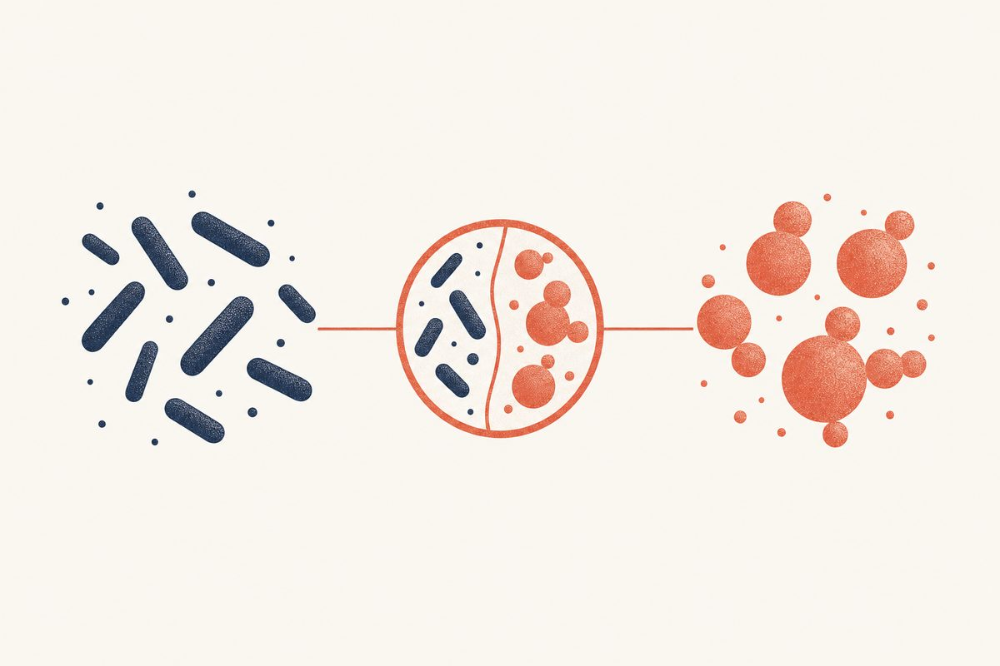

Key Takeaways
- BV is an overgrowth of certain bacteria in the vagina that a healthcare provider treats with antibiotics; a yeast infection is usually caused by Candida albicans and is treated with antifungals. They are different problems with different treatments.[2][1]
- Vaginal pH is a useful clue: a pH above 4.5 is one of the criteria for BV, while yeast is associated with a normal pH below 4.5. pH testing alone is not highly specific.[1]
- The discharge tells a story too. BV discharge is thin and milklike, coats the vaginal walls and often has a fishy odor, while yeast discharge is typically thick and curdy.[1][2]
- Itching is a typical yeast symptom, but it is not specific: CDC lists itching among possible BV symptoms as well.[1][2]
- Both are common. CDC estimates that 75 percent of women will have at least one yeast infection, and BV was found in 29.2 percent of U.S. women aged 14 to 49 in a national survey.[1][4]
- Most BV is silent: 84 percent of women with BV in that survey reported no symptoms, which is partly why the two get confused.[4]
- Treatments do not cross over. The over-the-counter vaginal products CDC lists for yeast are antifungals, while BV is treated with antibiotics such as metronidazole and clindamycin, which are prescription medicines.[1][12][13]

Few clinical questions come up as often as the difference between bacterial vaginosis and a yeast infection. The two conditions share a body part, can both change the discharge, and are often doused in the same over-the-counter remedies, but they are biologically different problems that need different treatments. This guide walks through each point of difference so you can recognize which one you are likely dealing with, and, more importantly, why a proper test is more reliable than a guess.
One note on scope. This guide owns the bacterial vaginosis side of the comparison in detail. The yeast side, including fluconazole dosing, recurrent yeast management, and home remedies, belongs to our yeast infection pillar and its satellite pages, linked where relevant below.
The Core Difference in One Paragraph
Bacterial vaginosis is a bacterial problem. CDC describes BV as a vaginal dysbiosis in which the normal lactic acid producing Lactobacillus species are replaced by high concentrations of anaerobic bacteria, including Gardnerella vaginalis.[1] A yeast infection is a fungal problem. Vulvovaginal candidiasis is usually caused by Candida albicans, and occasionally by other Candida species or yeasts.[1]
This distinction is not academic. CDC's recommended and alternative BV regimens are all antibiotics: metronidazole and clindamycin, with secnidazole and tinidazole as alternatives.[1] Yeast is treated with antifungals, including vaginal miconazole, clotrimazole and tioconazole sold over the counter, or a single 150 mg oral dose of fluconazole.[1] Using the wrong kind of medicine can cost time: CDC notes that unnecessary or unapproved use of over-the-counter products is common and can delay treatment of other causes of vaginitis.[1]
pH: A Fast and Useful Clue
Vaginal pH is one of the quickest bedside clues. CDC notes that yeast infection is associated with a normal vaginal pH (below 4.5), while an elevated pH above 4.5 is common with BV or trichomoniasis.[1] A pH above 4.5 is also one of the four Amsel criteria used to diagnose BV, a set of practical office criteria first proposed in a 1983 study of 397 university students.[1][3] pH is not the whole answer, though: CDC cautions that pH testing is not highly specific, so the discharge should also be examined under a microscope or tested.[1]
The same logic applies to a home pH strip. A reading above 4.5 makes BV or trichomoniasis more likely, and a normal reading fits yeast better, but trichomoniasis can also occur with a normal pH, so the result is suggestive, not diagnostic.[1]
Symptom by Symptom
The two conditions present with overlapping vocabulary, discharge, odor, and itch, but the emphasis of each is different. A side-by-side of the typical features is the fastest way to orient.
| Feature | Bacterial vaginosis | Yeast infection |
|---|---|---|
| Discharge | Thin, milklike, white or gray, coats walls | Thick, curdy |
| Odor | Fishy, especially after sex | Not among the typical symptoms |
| Itching / irritation | Can occur (itching, pain or burning) | Itching and soreness are typical |
| Vulvar redness / swelling | Itching around the outside of the vagina can occur | Swelling, fissures and excoriations can occur |
| Vaginal pH | Above 4.5 | Normal (below 4.5) |
| Burning with urination | Can occur | External burning is typical |
A rough rule of thumb: itching and soreness with a thick, curdy discharge fits yeast, while a fishy odor with a thin discharge fits BV. But CDC stresses that none of the typical yeast symptoms is specific, and BV can also cause itching, so neither rule replaces testing.[1][2]
Reading the Discharge
Discharge is the feature patients notice first. In BV, the discharge is classically homogeneous and thin, with a milklike consistency that smoothly coats the vaginal walls, and a fishy odor before or after adding 10% potassium hydroxide (the whiff test) is another of the four Amsel criteria.[1] CDC's patient page describes BV discharge as thin white or gray, with a strong fish-like odor, especially after sex.[2] Yeast, by contrast, typically produces a thick, curdy vaginal discharge.[1]
Color alone is not a reliable guide, since BV discharge can be white as well as gray. Texture, odor, and pH together are more informative than any single visual feature. For a detailed look at what BV discharge is and is not, see our BV discharge guide.
How Common Each Is
Both conditions are extremely common, which is itself a reason the confusion is so widespread. In the U.S. National Health and Nutrition Examination Survey (2001 to 2004), BV was found in 29.2 percent of women aged 14 to 49, and 84 percent of women with BV did not report symptoms.[4] For yeast, CDC estimates that 75 percent of women will have at least one episode of vulvovaginal candidiasis, and 40 to 45 percent will have two or more.[1]
Survey-based estimates for yeast are lower and vary by country: a seven-country internet panel survey put the probability of a yeast infection by age 50 at 23 to 49 percent (mean 39 percent).[7] Recurrent yeast infection, which CDC usually defines as three or more symptomatic episodes in less than a year, is not rare; the same survey estimated an average 23 percent probability of recurrent infection after a first yeast infection, and its authors concluded that recurrent yeast infection is common.[1][7]
What Triggers Each
The risk factors for the two conditions differ, which is another way to reason about which one you are dealing with. BV is associated with having multiple male sex partners, female partners, a new sex partner, lack of condom use, and douching.[1] In the U.S. national survey, BV remained linked to more lifetime sex partners and more frequent douching after adjustment for other factors, while smoking was linked to BV only before that adjustment.[4] Hormonal contraception does not increase BV risk and might protect against it.[1] Yeast, by contrast, is linked to factors that favor Candida: antibiotic use, hormonal changes such as the higher estrogen of pregnancy or combined oral contraceptives, diabetes, and immune dysfunction.[8]
| Trigger | Bacterial vaginosis | Yeast infection |
|---|---|---|
| New or multiple sexual partners | Associated | Uncomplicated yeast is not usually sexually acquired |
| Antibiotic use | Not among CDC's listed risk factors | Major contributor |
| Douching | Associated; might increase relapse | Discouraged, but not an official risk factor |
| High estrogen (pregnancy, hormones) | Hormonal contraception does not increase risk | Raises risk |
| Uncontrolled diabetes | Not among CDC's listed risk factors | Raises risk |
There is a telling asymmetry in the table. Antibiotic use is a major contributor to yeast infections, and a 2026 review notes that BV itself may predispose women to yeast, either on its own or after antibacterial treatment.[8] The labels for vaginal BV treatments show the same thing: about 10 percent of patients treated with metronidazole vaginal gel developed Candida vaginitis during or immediately after therapy, and vaginal yeast (moniliasis) was reported in 10.4 percent of women on the 7-day clindamycin vaginal cream regimen.[12][13] So when a woman finishes treatment for BV and then develops itching and thick discharge, a yeast infection is a real possibility rather than proof that the BV treatment failed, and it is worth getting checked.
How Each Is Diagnosed
The two conditions are confirmed with different tests, and knowing the method helps explain why a guess is risky. BV is diagnosed clinically with the Amsel criteria, which require at least three of four findings: a homogeneous, thin discharge that smoothly coats the vaginal walls; clue cells on microscopy; vaginal pH above 4.5; and a fishy odor before or after adding 10% potassium hydroxide (the whiff test).[1] In the laboratory, the Nugent score grades a Gram stain, with a score of 7 to 10 consistent with BV.[1]
Yeast is diagnosed in a woman with signs and symptoms of vaginitis when a wet preparation of the discharge (saline and 10% potassium hydroxide) shows budding yeasts, hyphae, or pseudohyphae, or when a culture or other test is positive for a yeast species; yeast infection is associated with a normal vaginal pH.[1] Molecular tests on a vaginal swab can also help: CDC describes multiplex assays that diagnose BV and also report results for Candida species and Trichomonas vaginalis, and BV molecular tests can be run on clinician-collected or self-collected vaginal specimens.[1]
The practical upshot is that a pH result plus a swab can answer much of the question in one visit. That matters because guessing often goes wrong: in a study of 95 women buying an over-the-counter antifungal for presumed yeast infection, only 33.7 percent actually had a yeast infection; the rest had BV, mixed vaginitis, a normal exam, or another diagnosis.[11]
Recurrence: A Key Behavioral Difference
Both conditions can come back, and in different ways. In an Australian study of women treated with oral metronidazole for symptomatic BV, 58 percent had BV again within 12 months; a past history of BV and having a regular sex partner during the study were linked to recurrence, which the authors say supports a possible role for sexual transmission.[9] CDC notes that persistent or recurrent BV is common.[1] Recurrent yeast infection is usually defined as three or more symptomatic episodes in less than a year.[1] A seven-country survey estimated an average 23 percent probability of recurrent yeast infection after a first episode, and recurrent yeast is managed differently, typically with an induction course of fluconazole followed by once-weekly fluconazole for 6 months.[7][8]
What this means in practice: if symptoms keep coming back, confirm which condition it is rather than repeating the same over-the-counter product. CDC advises that anyone whose symptoms persist after an over-the-counter yeast product, or return within 2 months of yeast treatment, should be evaluated and tested, and that women with BV should return for evaluation if symptoms recur.[1] A 2026 review adds that confirmatory tests are essential in recurrent yeast infection.[8]
| Recurrence measure | Bacterial vaginosis | Yeast infection |
|---|---|---|
| Returns within 12 months | 58 percent in one study after oral metronidazole | Not measured the same way |
| Recurrent disease threshold | No single standard threshold | 3 or more episodes in under a year |
| Share who become recurrent | Persistent or recurrent BV is common | About 23 percent after a first episode (survey estimate) |
| What CDC advises | Return for evaluation if symptoms recur | Evaluation and testing if symptoms persist after OTC treatment or return within 2 months |
Can You Have Both at Once?
Yes, and it is more common than the tidy tables suggest. In the study of women buying over-the-counter yeast products, 21.1 percent turned out to have mixed vaginitis.[11] A 2026 review notes that dual or co-existing conditions are common, and that BV may predispose women to a yeast infection, either independently or following antibacterial treatment.[8] The metronidazole vaginal gel label advises telling patients that vaginal fungal infections can occur after use, and both it and the clindamycin vaginal cream label report vaginal yeast in about 1 in 10 treated women.[12][13] A woman treated for BV who shortly afterward develops itching and thick discharge may have developed yeast rather than failed treatment, which is worth confirming with a clinician.
Trichomoniasis, the third infection most often behind vaginal symptoms, is also worth keeping in mind because it can cause discharge and odor and needs a different treatment.[1] This is a strong argument for testing when symptoms are mixed or recurrent rather than assuming it is one thing. For detail on that third condition, see our master guide and the relevant STI pages.
The Third Cause: Trichomoniasis
BV and yeast are not the only two things that cause discharge and odor, and leaving out the third major cause is a common reason symptoms do not clear. Trichomoniasis, caused by Trichomonas vaginalis, is estimated to be the most prevalent nonviral sexually transmitted infection worldwide. Women with trichomoniasis sometimes have a vaginal discharge that can be diffuse, malodorous, or yellow-green, with or without vulvar irritation, and, like BV, it is commonly linked to a vaginal pH above 4.5, although it can also occur with a normal pH.[1]
The key difference is that trichomoniasis is a sexually transmitted infection with a single known cause, while the cause of the bacterial shift in BV is not fully understood.[1] CDC's recommended regimen for women is metronidazole 500 mg by mouth twice a day for 7 days, with a single 2 g oral dose of tinidazole as an alternative, and people with trichomoniasis should abstain from sex until they and their sex partners are treated.[1] Because its discharge overlaps with both BV and yeast, a swab test that covers all three is the efficient way to sort a mixed or persistent picture. This is one reason the refrain throughout this guide is the same: when it is not obvious, test rather than guess.
How Treatment Differs
BV is treated with antibiotics prescribed by a healthcare provider.[2] CDC's recommended regimens are oral metronidazole, metronidazole vaginal gel, or clindamycin vaginal cream; alternatives include oral clindamycin, clindamycin vaginal ovules, single-dose secnidazole granules, and oral tinidazole.[1] Metronidazole vaginal gel and clindamycin vaginal cream are prescription (Rx only) products, and single-dose secnidazole 2 g is FDA approved for BV in adult women.[12][13][10] Yeast, by contrast, can often be treated with over-the-counter vaginal clotrimazole, miconazole, or tioconazole; CDC also lists prescription vaginal butoconazole and terconazole and a single 150 mg oral dose of fluconazole.[1]
| Treatment | Bacterial vaginosis | Yeast infection |
|---|---|---|
| Drug class | Antibiotic | Antifungal |
| Examples | Metronidazole, clindamycin; secnidazole or tinidazole as alternatives | Miconazole, clotrimazole, tioconazole, fluconazole |
| Over the counter? | No, prescribed by a healthcare provider | Yes, several vaginal antifungals |
| Typical course | 5 or 7 days for recommended regimens; alternatives range from a single dose to 7 days | A single application to 7 days for most vaginal products (some up to 14 days), or one 150 mg fluconazole dose |
That difference creates a predictable failure pattern. A person with BV may reach for an over-the-counter antifungal, see no change, and lose time before the right diagnosis; CDC notes that unnecessary or unapproved use of over-the-counter products is common and can delay treatment of other causes of vaginitis.[1] If you used an over-the-counter yeast product and nothing changed, the miconazole label says to stop and ask a doctor if symptoms do not get better in 3 days or last more than 7 days, and CDC advises evaluation and testing when symptoms persist.[14][1]
Two practical points about the treatment gap. First, because yeast can follow BV treatment, the metronidazole vaginal gel label advises telling patients that vaginal fungal infections can occur after use, so it helps to know what to watch for and to check in promptly if itching and thick discharge appear.[1][2] Second, single-dose secnidazole was developed partly because longer BV regimens are associated with poor adherence, according to a sponsor-authored analysis; it is a BV antibiotic, not a yeast treatment, so the direction of treatment still has to be right.[10]
Why Self-Diagnosis Fails
Studies of self-diagnosis are sobering. In the study of 95 women buying an over-the-counter antifungal for presumed yeast infection, only 33.7 percent had a yeast infection; 18.9 percent had BV, 21.1 percent mixed vaginitis, 13.7 percent a normal exam, 10.5 percent another diagnosis, and 2.1 percent trichomoniasis. A previous yeast diagnosis by a clinician did not make women more accurate.[11] CDC likewise notes that a medical history alone is insufficient for accurate diagnosis of vaginitis and can lead to inappropriate medication, and that BV, trichomoniasis, and yeast are the infections most often behind vaginal symptoms.[1] Reviews of yeast infection make the same point: without rapid, simple tests, yeast is both overdiagnosed and underdiagnosed, and the first step is confirming the diagnosis rather than treating on a guess.[5][6] A pH strip narrows the odds, but the definitive answer comes from an exam with microscopy or a lab test on a vaginal swab, and CDC notes that BV molecular tests can use self-collected vaginal specimens.[1]
The practical rule is simple: if this is a first episode, if symptoms are mixed, if you are pregnant, or if a prior self-treatment failed, get tested before treating. The over-the-counter miconazole label itself says not to use it if you have never had a vaginal yeast infection diagnosed by a doctor, and to ask a health professional before use if pregnant.[14] In pregnancy the stakes are higher: CDC recommends BV treatment for all symptomatic pregnant women because symptomatic BV has been associated with outcomes including premature rupture of membranes and preterm birth, and recommends only 7-day topical azoles for yeast in pregnancy.[1]
When to Get Tested Rather Than Guess
Some situations should always escalate from guessing to testing. Contact a clinician if you have fever, pelvic or lower abdominal pain, pain with intercourse, or abnormal bleeding, since these can signal pelvic inflammatory disease or another infection rather than either BV or yeast.[15][1][14] Any symptoms in pregnancy warrant evaluation rather than self-treatment.[14][1] Recurrent symptoms despite treatment, or symptoms that arrive with a new sexual partner, also justify a full vaginitis panel, because trichomoniasis and other sexually transmitted infections can masquerade as either condition, and CDC advises that all women with BV be tested for HIV and other STIs.[1] In short, the two conditions you can confuse with each other are also the two you can most efficiently sort out with one accurate test.
Putting It Together: A Quick Decision Guide
If you remember only a few rules, make them these. Itching and soreness with a thick, curdy discharge fits yeast; a fishy odor with a thin discharge fits BV; and a pH check adds a useful clue, with a reading above 4.5 favoring BV or trichomoniasis and a normal reading fitting yeast.[1][2] None of these is specific on its own.
Then act in the right direction. Over-the-counter vaginal antifungals are an option for yeast, but their label says not to use them unless a doctor has diagnosed a vaginal yeast infection before, while BV needs antibiotics prescribed by a healthcare provider.[14][2] If your symptoms do not fit the classic pattern, if they keep coming back, or if you have already tried an over-the-counter product without success, get evaluated and tested.[1] The two conditions are easy to conflate and much easier to sort out once the right test has been done.
Frequently Asked Questions
Yes. Mixed infections occur: 21.1 percent of women in one study of people buying over-the-counter yeast products had mixed vaginitis.[11] A yeast infection can also follow BV treatment; labels for metronidazole vaginal gel and clindamycin vaginal cream report vaginal yeast in about 1 in 10 treated women.[12][13] A proper test sorts it out rather than guessing between the two.
That is the typical pattern. A strong fish-like odor, especially after sex, is a classic BV symptom, and a fishy odor before or after adding potassium hydroxide to the discharge is one of the Amsel criteria for BV.[2][1] Odor is not among the typical yeast symptoms CDC lists, but trichomoniasis can also cause a malodorous discharge.[1] The odor is one of the more useful clues pointing toward BV.
No. Monistat contains miconazole, an antifungal labeled to treat vaginal yeast infections, and none of CDC's BV regimens is an antifungal; BV is treated with antibiotics prescribed by a healthcare provider.[14][1][2] If an antifungal did not help, get checked: the label says to stop and ask a doctor if symptoms do not get better in 3 days or last more than 7 days.[14]
A pH strip can be a useful first signal. A pH above 4.5 is common with BV or trichomoniasis, while yeast is associated with a normal pH below 4.5.[1] pH testing is not highly specific, so confirm with an exam or swab when the result is unclear.
Both can come back. In one study, BV returned within 12 months in 58 percent of women treated with oral metronidazole.[9] For yeast, a seven-country survey estimated an average 23 percent probability of recurrent infection after a first episode.[7] The measures differ, so they are not directly comparable; either way, recurrent symptoms deserve evaluation and testing.[1]
Often one vaginal swab can answer the question. CDC describes molecular tests that diagnose BV and also report results for Candida species and Trichomonas vaginalis.[1] This is why testing beats guessing when symptoms are mixed.
Two common possibilities. It may not have been yeast in the first place, so an antifungal did nothing while BV or another cause persisted, or the product caused irritation; the miconazole label notes that a mild increase in vaginal burning, itching or irritation may occur.[11][14] If an over-the-counter antifungal failed, get evaluated and tested before trying again.[1]
BV does not turn into yeast, but yeast can follow BV treatment: about 10 percent of patients treated with metronidazole vaginal gel developed Candida vaginitis during or immediately after therapy, and a 2026 review notes that BV may predispose to yeast on its own or after antibacterial treatment.[12][8] So the two can seem to transform into each other.
Neither is usually dangerous in itself, but BV carries more downstream risk: it is associated with a higher risk of acquiring STIs, including HIV, and symptomatic BV in pregnancy has been associated with outcomes such as preterm birth.[1][4] Most yeast infections are uncomplicated and respond to antifungal therapy, although recurrent yeast can seriously affect quality of life, and pregnancy and immune compromise change how yeast is treated.[6][7][1]
References
- Workowski KA, Bachmann LH, Chan PA, et al. Sexually Transmitted Infections Treatment Guidelines, 2021. MMWR Recomm Rep. 2021;70(4):1-187. PMID 34292926
- Centers for Disease Control and Prevention. About Bacterial Vaginosis (BV). Last reviewed December 11, 2023. cdc.gov
- Amsel R, Totten PA, Spiegel CA, Chen KC, Eschenbach D, Holmes KK. Nonspecific vaginitis. Diagnostic criteria and microbial and epidemiologic associations. Am J Med. 1983;74(1):14-22. PMID 6600371
- Koumans EH, Sternberg M, Bruce C, et al. The prevalence of bacterial vaginosis in the United States, 2001-2004; associations with symptoms, sexual behaviors, and reproductive health. Sex Transm Dis. 2007;34(11):864-869. PMID 17621244
- Sobel JD. Vulvovaginal candidosis. Lancet. 2007;369(9577):1961-1971. PMID 17560449
- Sobel JD. Vulvovaginitis. When Candida becomes a problem. Dermatol Clin. 1998;16(4):763-768, xii. PMID 9891677
- Blostein F, Levin-Sparenberg E, Wagner J, Foxman B. Recurrent vulvovaginal candidiasis. Ann Epidemiol. 2017;27(9):575-582.e3. PMID 28927765
- Rautemaa-Richardson R, Sobel JD, Stone N, et al. State-of-the-Art Review: Managing Vulvovaginal Candidiasis. Clin Infect Dis. 2026;82(3):371-382. PMID 41839452
- Bradshaw CS, Morton AN, Hocking J, et al. High recurrence rates of bacterial vaginosis over the course of 12 months after oral metronidazole therapy and factors associated with recurrence. J Infect Dis. 2006;193(11):1478-1486. PMID 16652274
- Pentikis H, Adetoro N, Tipping D, Levy S. An integrated efficacy and safety analysis of single-dose secnidazole 2 g in the treatment of bacterial vaginosis. Reprod Sci. 2020;27(2):523-528. PMID 32046418
- Ferris DG, Nyirjesy P, Sobel JD, et al. Over-the-counter antifungal drug misuse associated with patient-diagnosed vulvovaginal candidiasis. Obstet Gynecol. 2002;99(3):419-425. PMID 11864668
- DailyMed, U.S. National Library of Medicine. VANDAZOLE (metronidazole gel) 0.75%, vaginal: prescribing information. Label revised February 2021; DailyMed entry updated December 2, 2025. DailyMed
- DailyMed, U.S. National Library of Medicine. CLEOCIN (clindamycin phosphate) Vaginal Cream 2%: prescribing information. Label revised March 2025; DailyMed entry updated November 19, 2025. DailyMed
- DailyMed, U.S. National Library of Medicine. MONISTAT 7 (miconazole nitrate) vaginal cream, Drug Facts label. Insight Pharmaceuticals. DailyMed entry updated November 12, 2024. DailyMed
- MedlinePlus, U.S. National Library of Medicine. Pelvic Inflammatory Disease. Last updated July 15, 2025. medlineplus.gov